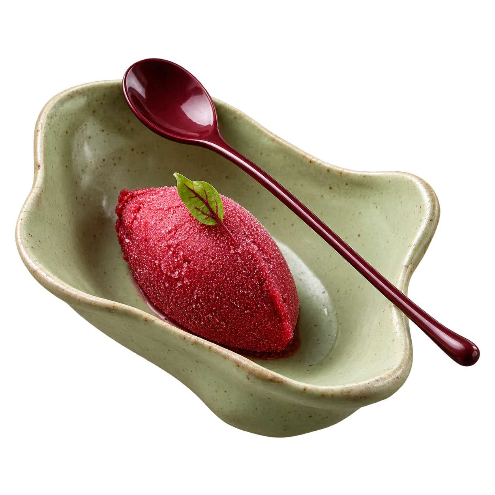

a little sorbet
Good taste. Small portions. Great company.
A small taste
of
wonderful.

The bright beginning
Serves 4
5
little courses.
one lovely evening.
Your menu, coming together
↗
TO BEGIN
Tomato & peach
SOMETHING GREEN
Peas & soft herbs
A LITTLE WARMTH
Lemon butter beans
THE HAPPY ENDING
Raspberry sorbet
ONE LAST BITE
Pistachio shortbread
sorbet.